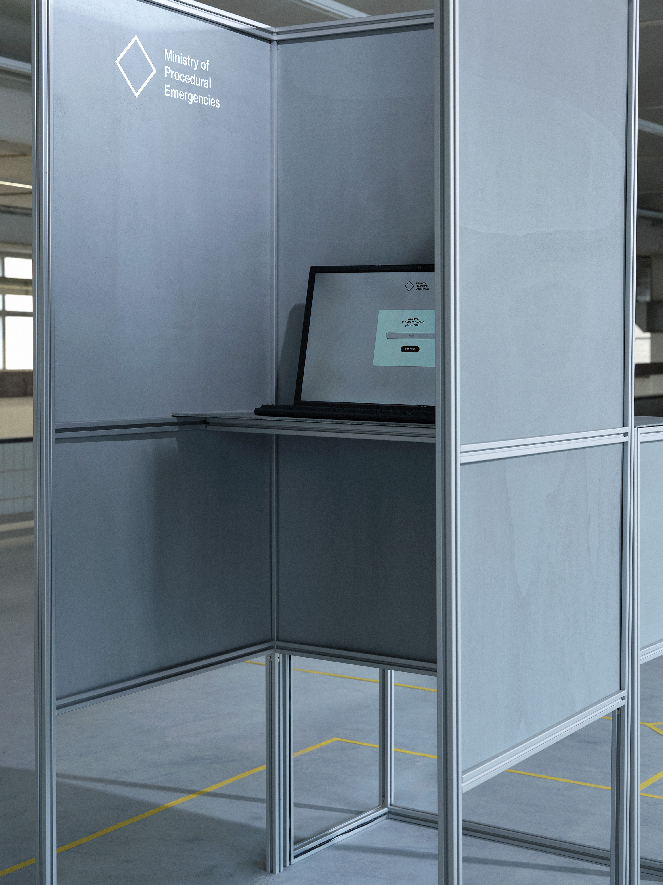

Alessandra Pandolfi (2000, IT) is a multidisciplinary designer whose approach intertwines field research, visual languages, and participatory or performative methodologies. She studied Design at the University of the Republic of San Marino and earned a Master’s in Social Design from the Design Academy Eindhoven.
Her current research focuses on the role of design within contemporary governance dynamics, examining its impact on rights, collective behaviors, and public spaces. Through situated practices and tools for collective reflection, she works on activating alternative imaginaries that foster dialogue and make complex topics — often perceived as abstract or distant — more tangible and accessible.
I'm currently taking part in Earthrise 25 at Circolo del Design, in Turin, Italy.
Have a look at the development of the
residency! ↗
